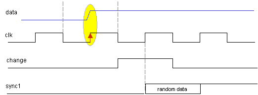
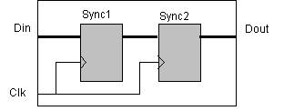

vc_sync is a synchronization
register cell. It models synchronization effects and performs cross-domain
checks. The contents of the cell are different for synthesis (implementation)
and verification. The synthesis view of vc_sync contains two stages of the multibit
registers (bit width defined by parameter). The verification view of vc_sync
contains synchronization effects modeling and synchronization checkers.
vc_sync #(bit_width, invert)
InstName (clk, reset_n, data_in, data_out);
Parameters
|
|
bit_width
|
Defines bit width of synchronization register |
invert
|
By default (invert == 0), in case of input data –
clock conflict, random value is introduces for one clock cycle to the second synchronization
flip-flop. In order to get more pessimistic results, we can replace random
function by the input value inversion (invert == 1) |
Interface
|
|
|
clk |
Clock input |
|
reset_n |
Active-low reset |
|
data_in |
Multi-bit input data (before synchronization) |
|
data_out |
Multi-bit output data (after synchronization) |
The
Clock Domain synchronization bugs are critical in the chip design process. It
is difficult to find them, since they heavily depend on the test vector
patterns, timing etc. These bugs don’t belong solely to the verification
domain: they are speeded between design, verification and up to synthesis/STA.
It is impossible to uncover and fix these bugs with a functional verification
only. This task requires a joint work of the number of teams.
VC_SYNC
is an innovative verification component that allows to derive the most from the
functional verification finding synchronization bugs.
VC_SYNC
provides the following checks:
VC_SYNC
models the following effects:
The
following figure illustrates this effect:

When
VCL_VERIFICATION is defined, a vc_sync component provides all check and
simulates all errors as described above. Otherwise, vc_sync contains two stages
of the multi-bit parametric registers only (see figure 2). This enables
synthesis of the vc_sync component.

module test;
reg clk1, clk2;
initial begin
clk1 = 0;
clk2 = 0;
end
always #10 clk1 <= ~clk1;
always #12 clk2 <= ~clk2;
reg reg1, reg2, raw_rst_n;
wire reg2_w, rst_n;
always @(posedge clk1)
reg1 <= $random;
always @(posedge clk2)
reg2 <= reg2_w;
vc_sync_rst sync_rst (clk2,
1'b0, raw_rst_n, rst_n);
vc_sync sync (clk2, rst_n,
reg1, reg2_w);
initial begin
$dumpvars;
raw_rst_n = 0;
#52 raw_rst_n = 1;
#1000 $finish;
end
endmodule